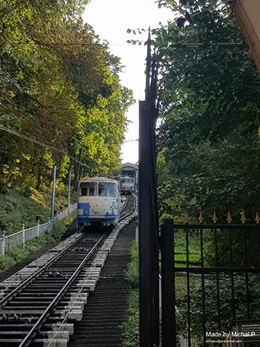

Ukraine 
Kyiv, September 2019 - I spend in Kyiv one day exactly and I wish I could have stayed for more. Ukraine is definitely underrated country when it comes to tourism. The building themself have such a long history and the architecture there is simply gorgeous. By taking a hill train, I've got to the top walkway where you could walk to the arch of friendship. Next to the statue of the Motherland you could see different military vechicles and take pictures next to them too. Even though Ukraine is going through the process of decommunization, you can still find buildings or statues with the logo if Soviet Union.
Pripyat, Chernobyl, September 2019 - To Chernobyl I travel on organised tour as you are only allowed to enter the exclusion zone with a tour guide. I saw the smaller villages aswell as the famous city of Chernobyl and Pripyat. From there we travel to the reactor number 4 where the biggest nuclear explosion to date happened. Finally we visited abandoned amusement park which was never opened to the public as the scheduled date for opening was 4 days after the explosion happened.
- 